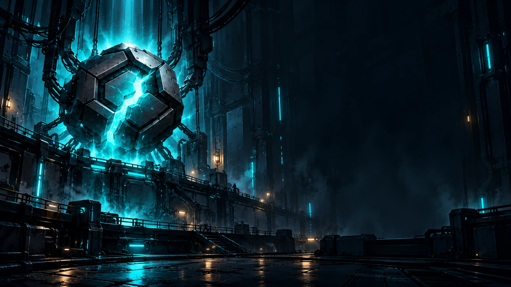

Campaign
Play through the sectors and unlock equipment. Defend the core, protect optional station objectives and fight sector bosses.
- 29 sectors across two chapters
- Switchable roads in later sectors
- Boss phases and station encounters

BreachLabs / Games
Choose your towers.
Defend the core.
A sci-fi tower defence game in development for Solana Seeker, with a planned release on the Solana dApp Store.
First release target: Solana Seeker · Android
Current development build · Features may change before release.
How it plays
Choose where to place your towers. Combine damage, slowing and support roles. Upgrade towers, choose specialisations and change their targets as enemies arrive.
Different sectors have branching routes, shielded enemies, repair units and bosses with changing attack patterns.
From the current build
Development screenshots.
Select a view to take a closer look.
Game modes
Play through the sectors and unlock equipment. Defend the core, protect optional station objectives and fight sector bosses.
Try a three-tower limit, defend a fragile core or play longer missions. Earn medals and complete optional contracts.
Continue through endless waves, with a boss every fifth wave. Choose a reward, skip it or use an eligible milestone choice to add a tower slot.
Rewards
The current build includes achievements, medals, titles and cosmetics earned through play. Money does not buy a gameplay advantage.
In the current build, progress and battle saves are stored on your device.
Recent changes
The latest update lets players skip Survival rewards, add tower slots at certain milestones and use simpler battlefield controls.
Choose a reward or skip it before starting the next wave.
Optional slots at waves 10, 20, 30 and 40. Towers still cost their normal credits.
Simpler tower selection, smaller enemy labels and settings grouped by type.
Development plans
Solana Seeker is our first target, with a release planned for the Solana dApp Store.
The current build does not connect to a wallet. Optional wallet features may be explored for future collaborations. We will decide what to add when there is a clear use for it.
We are considering a Google Play version. There is no release date or store listing yet.
Testing and contact
Email us to ask about future playtests, share feedback or discuss a collaboration.
The game has not been released on a store yet.